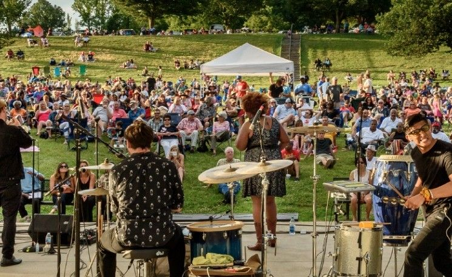
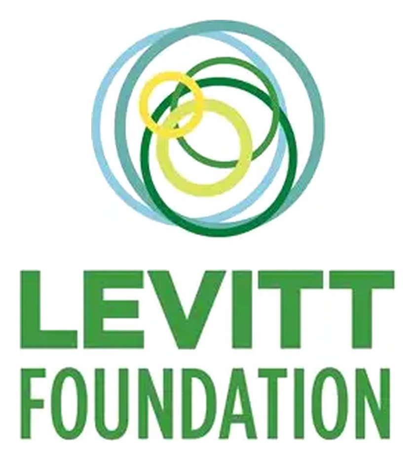
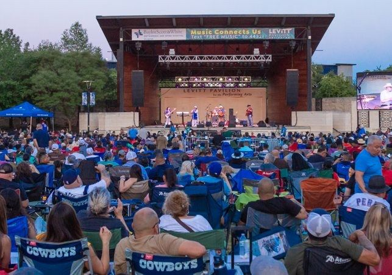
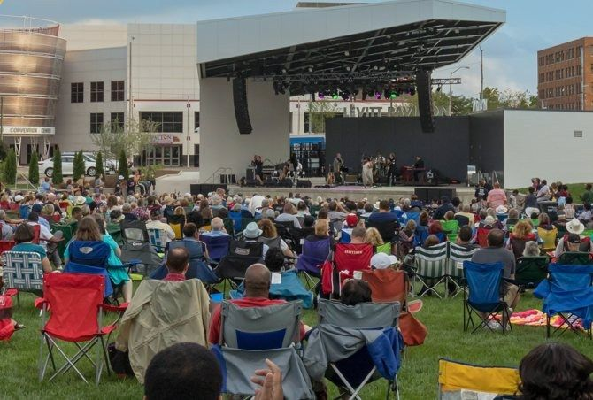
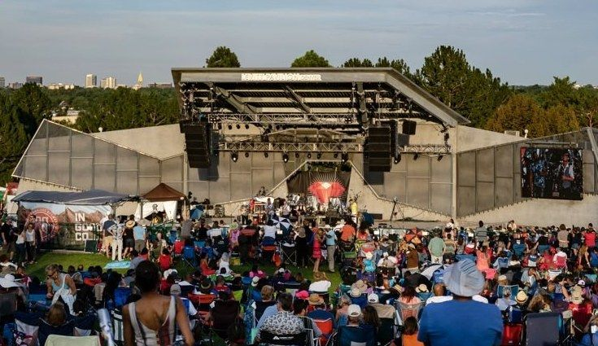
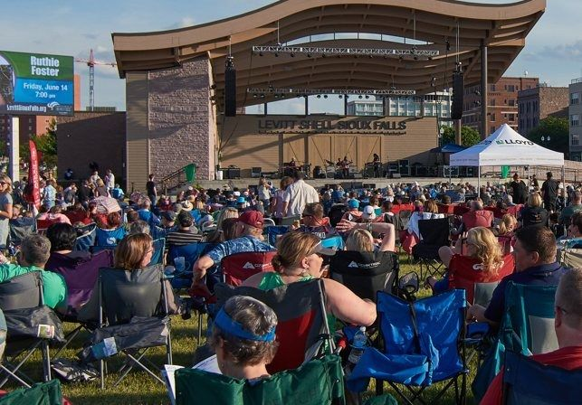
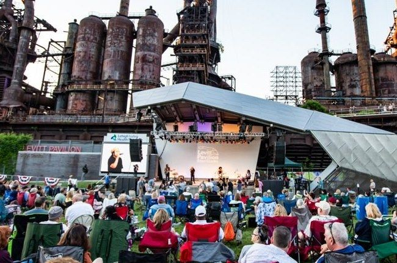
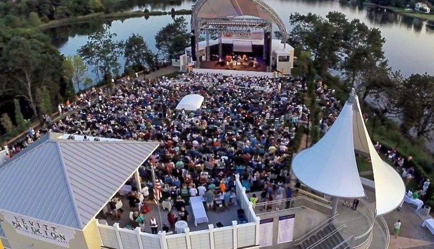
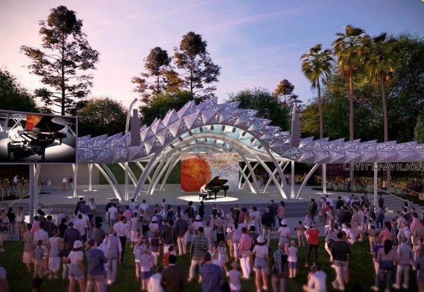
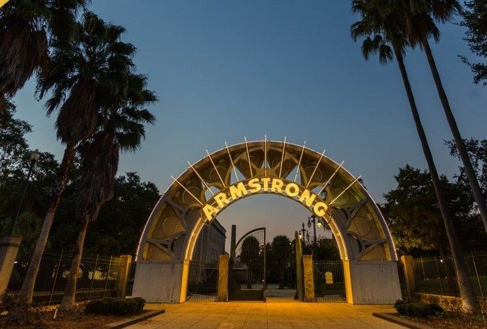

The Levitt network
Part of something bigger.
Across the country, Levitt venues bring people together through free outdoor concerts in welcoming public spaces. Each venue is shaped by its own city, but all share the same purpose: creating connection through music.

National reach
A movement, coast to coast.
More than concerts
More than a concert series.
Across the country, Levitt organizations use free music to create stronger public spaces, support local artists and build partnerships that bring communities together.
Local artists, real stage
Hometown musicians share the bill with touring acts.
Community partnerships
Schools, nonprofits and neighborhood organizations help shape programs.
A place people return to
Concerts and community events create repeated reasons to gather.
Free, live music brings friends, families, and neighbors of all ages and backgrounds together.Sharon Yazowski, President and CEO, Levitt Foundation
Public space impact
More activity. More connection. A stronger public place.
Free, recurring programming gives people reasons to return to a public space, bringing activity, connection and a stronger sense of place over time.
An active public space
Regular programming brings people back again and again.
A stronger sense of place
Music can help a public space become part of a community’s identity.
Built to last
Local leadership and Levitt Foundation support help sustain the work over time.

Houston’s place
Bringing the Levitt model to Houston.
Levitt Houston brings a nationally proven model for free outdoor music to Willow Waterhole, shaped by the people, music and character of Southwest Houston.
We’re starting with a recurring concert series in 2027 while continuing the work toward a permanent Levitt Pavilion. Each concert helps build the audience, partnerships and community support for what comes next.
The venues
Levitt venues across the country.

Levitt Pavilion Arlington
Arlington, Texas
Free concerts fill a downtown gathering place in North Texas.
Official site
Levitt Pavilion Dayton
Dayton, Ohio
A downtown lawn where free live music brings the whole city together.
Official site
Levitt Pavilion Denver
Denver, Colorado
Audiences gather for free outdoor music at Ruby Hill Park.
Official site
Levitt Shell Sioux Falls
Sioux Falls, South Dakota
Free concerts bring the community together in the heart of Sioux Falls.
Official site
Levitt Pavilion SteelStacks
Bethlehem, Pennsylvania
Free music beneath the historic blast furnaces at the SteelStacks arts campus.
Official site
Levitt Pavilion Westport
Westport, Connecticut
The original Levitt Pavilion, bringing music to the Saugatuck riverfront since 1974.
Official siteIn development
Houston is not building alone.
Houston is one of several communities presenting free Levitt concerts while working toward a permanent pavilion.

Levitt Pavilion San Jose
San Jose, California
Pop up concerts since 2022, with a permanent pavilion planned for St. James Park.

Levitt Pavilion New Orleans
New Orleans, Louisiana
A future Levitt venue planned for Armstrong Park, the heart of the city’s music heritage.

Levitt Pavilion Houston
Houston, Texas
Free concerts begin in 2027 at Willow Waterhole while plans for the permanent pavilion move forward.
Our pavilion plans